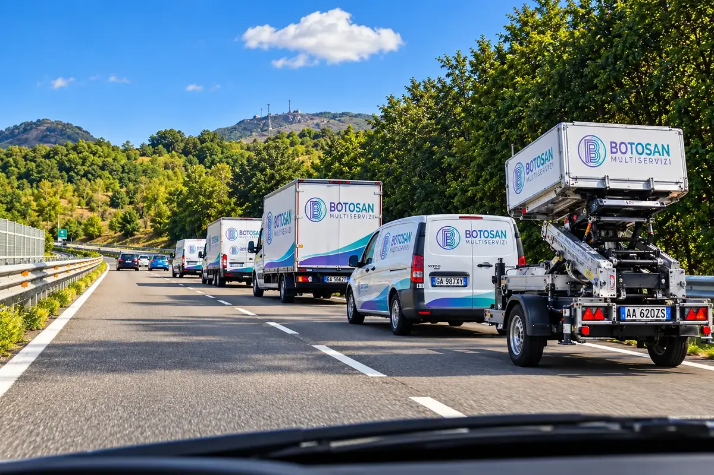
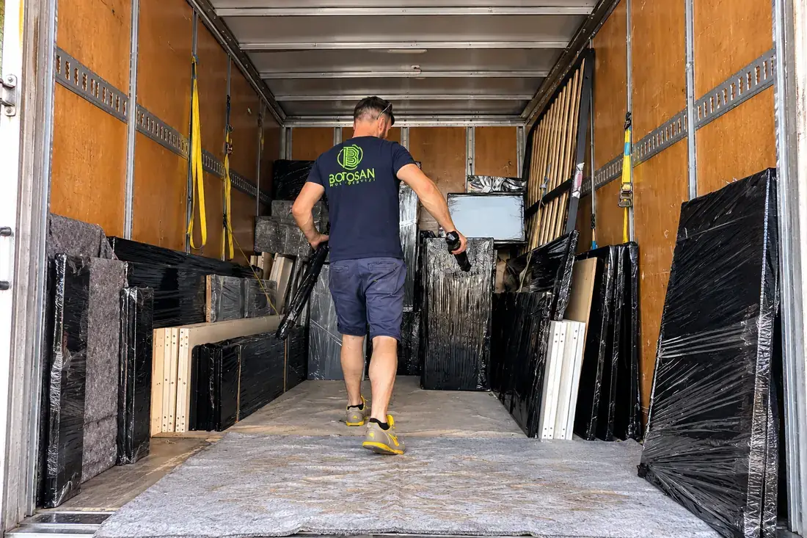
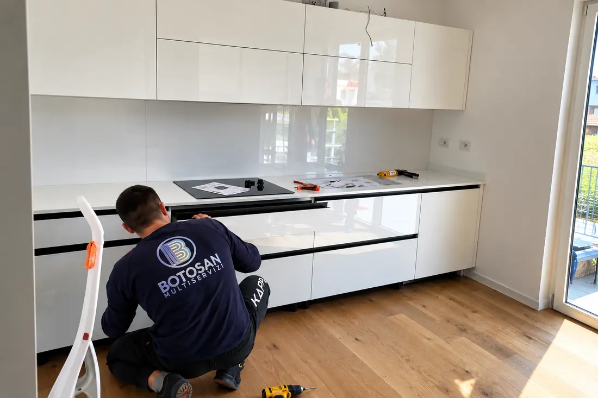
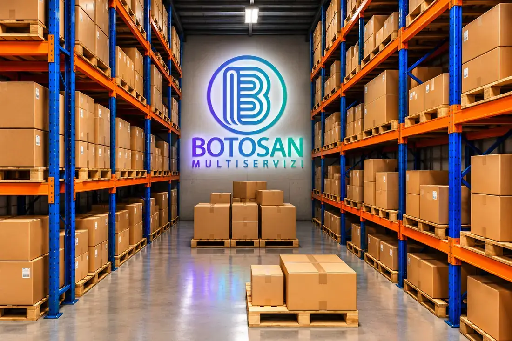
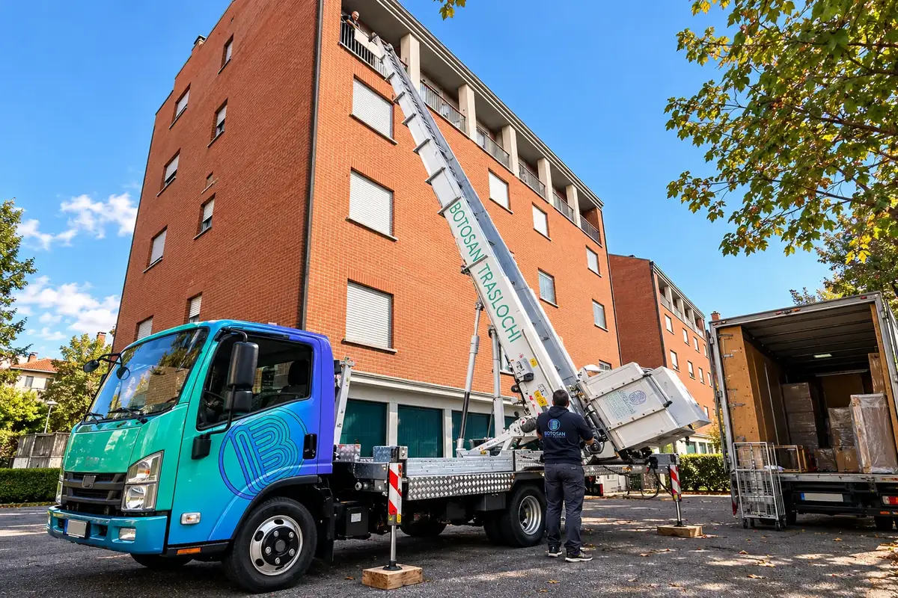
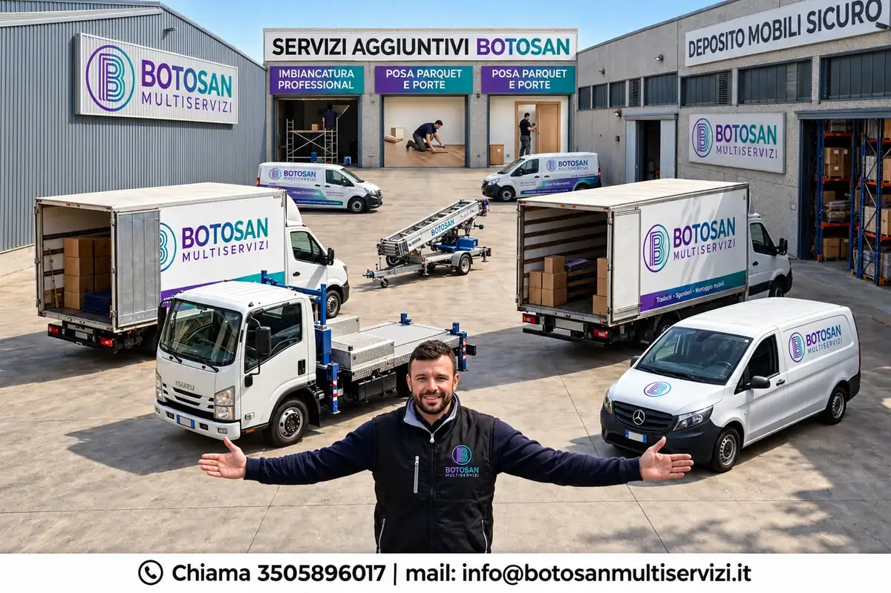
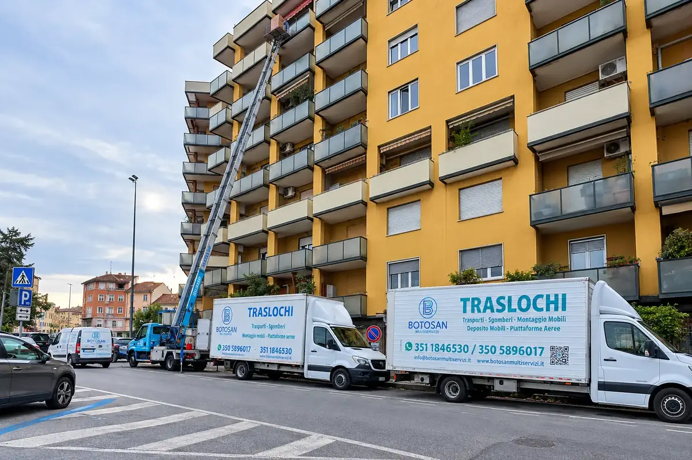
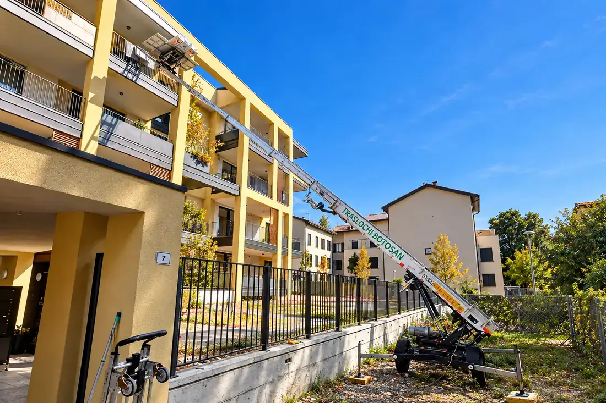
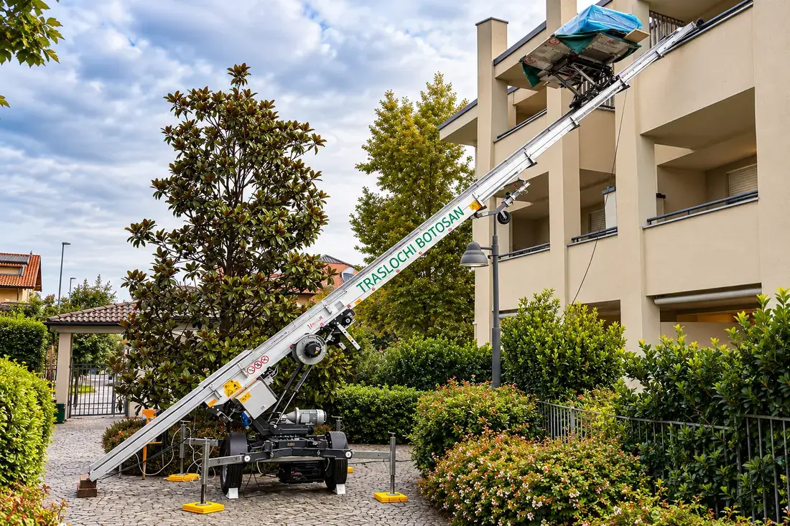

News e consigli
Come si prepara un trasloco, quanto costa davvero e come lavoriamo nei paesi in cui interveniamo ogni settimana.
Guide

Perché non esiste una tariffa unica e quali elementi spostano davvero il preventivo.

Sei passi per arrivare al giorno del trasloco con tutto già deciso.

Il modo giusto di riempire gli scatoloni perché non arrivi nulla di rotto.

Dal sopralluogo al rimontaggio, con un solo referente invece di cinque fornitori.

Il calendario del trasloco, da un mese prima al giorno stesso.

Uffici, aziende e negozi: inventario, etichette e pratiche da chiudere per tempo.
Lavori

Un lavoro con scala aerea, permessi, montaggio dei mobili nuovi e pulizie prima dell’ingresso.

Permessi, Polizia Locale e amministratore di condominio gestiti da noi.
Residenze di pregio: protezioni dedicate, mezzi adatti e lavoro su misura.
Zone

Siamo di Inzago: qui conosciamo strade, cortili e palazzi uno per uno.
Come lavoriamo a Gessate, dal sopralluogo al rimontaggio dei mobili.

Dal appartamento al capannone, con un’organizzazione decisa caso per caso.
Sopralluogo e preventivo gratuiti, senza impegno. Ti rispondiamo in giornata.
Affidati a noi per un trasloco senza stress: smontaggio, imballaggio, trasporto e rimontaggio. Ogni fase seguita da personale nostro, con preventivo chiaro e sopralluogo gratuito.
Scopri di piùSpostiamo uffici e attività nel fine settimana o fuori orario, per non fermare il lavoro: arredi, archivi e postazioni numerati e rimontati nella nuova sede.
Scopri di piùScale fino a 45 metri per caricare da balconi e finestre dove le scale interne non bastano: sicure, veloci e senza danni a mobili o pareti.
Scopri di più